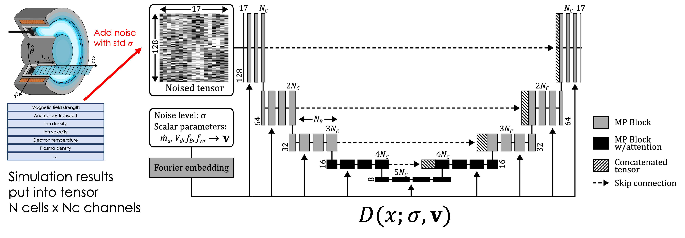
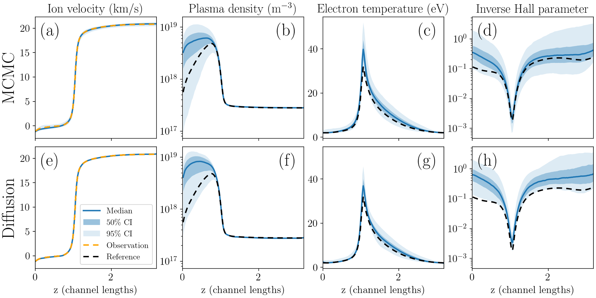

Thomas A. Marks and Alex A. Gorodetsky 10.7302/27333
Presented at SIAM Conference on Uncertainty Quantification, March 22–25, 2026.
A common task across all fields of science and engineering is to predict the inputs of a model or simulation given partial observations of the models outputs. These “inverse problems” are notoriously difficult to solve. Classical optimization methods are commonly used but only provide one answer and thus cannot quantify the uncertainty in that answer. Bayesian inference methods, such as Markov chain Monte Carlo (MCMC), address this need by generating samples from the posterior distribution of the inputs, specified by a likelihood function. The generated samples can be analyzed to quantify uncertainty in model predictions. Such methods are robust and widely used, but are difficult to parallelize and have challenges scaling to high dimensions. To this end, we propose and demonstrate the use of a diffusion model for solving inverse problems in the field of low temperature plasmas. These models have become extremely widely-used for generative modeling tasks, particularly image generation. They have also been applied more recently to text generation and the solution of inverse problems in science and engineering. Specifically, we apply a diffusion model to the task of learning unknown scalar input fields given partial observation of the results of a 1-D fluid simulation of a Hall thruster. We show that these methods provide a powerful, robust, and fast alternative to traditional Bayesian inference methods.

